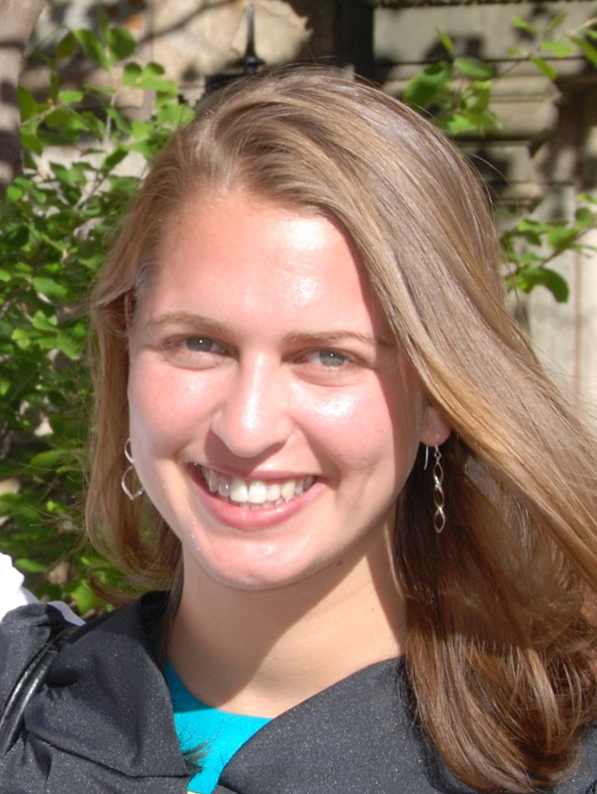

I graduated from MIT with a PhD in Computer Science in September, 2017, and now I am an Engineering Manager at Cockroach Labs. While at MIT, I worked in the Database Group with Mike Stonebraker. My thesis research focused on elastic scalability of DBMSs as well as multi-tenancy in the cloud.
N. VanBenschoten, A. Ajmani, M. Gartner, A. Matei, A. Shah, I. Sharif, A. Shraer, A. Storm, R. Taft, O. Tan, A. Woods, and P. Walters. Enabling the Next Generation of Multi-Region Applications with CockroachDB. In Proceedings of the 2022 ACM SIGMOD International Conference on Management of Data, SIGMOD ’22, pages 2312–2325, 2022.
R. Taft, I. Sharif, A. Matei, N. VanBenschoten, J. Lewis, T. Grieger, K. Niemi, A. Woods, A. Birzin, R. Poss, P. Bardea, A. Ranade, B. Darnell, B. Gruneir, J. Jaffray, L. Zhang, and P. Mattis. CockroachDB: The Resilient Geo-Distributed SQL Database. In Proceedings of the 2020 ACM SIGMOD International Conference on Management of Data, SIGMOD ’20, pages 1493–1509, 2020.
R. Taft, N. El-Sayed, M. Serafini, Y. Lu, A. Aboulnaga, M. Stonebraker, R. Mayerhofer, and F. Andrade.
R. Taft. Elastic Database Systems. PhD thesis, MIT, Cambridge, 2017.
M. Serafini, R. Taft, A. Elmore, A. Pavlo, A. Aboulnaga, and M. Stonebraker. Clay: Fine-Grained Adaptive Partitioning for General Database Schemas. In Proceedings of the VLDB Endowment, Vol. 10, No. 4, VLDB ’17, pages 445-456, 2016.
R. Taft, W. Lang, J. Duggan, A. Elmore, M. Stonebraker, and D. DeWitt. STeP: Scalable Tenant Placement for Managing Database-as-a-Service Deployments. In Proceedings of the Seventh ACM Symposium on Cloud Computing, SoCC ’16, pages 388-400, 2016.
R. Taft. Predictive Modeling for Management of Database Resources in the Cloud. Master’s thesis, MIT, Cambridge, 2015.
A. Elmore, V. Arora, R. Taft, A. Pavlo, D. Agrawal, and A. El Abbadi. Squall: Fine-Grained Live Reconfiguration for Partitioned Main Memory Databases. In Proceedings of the 2015 ACM SIGMOD International Conference on Management of Data, SIGMOD '15, pages 299-313, 2015.
R. Taft, E. Mansour, M. Serafini, J. Duggan, A. Elmore, A. Aboulnaga, A. Pavlo, and M. Stonebraker. E-Store: Fine-Grained Elastic Partitioning for Distributed Transaction Processing Systems. In Proceedings of the VLDB Endowment, Vol. 8, No. 3, VLDB ’15, pages 245-256, 2014.
R. Taft, M. Vartak, N. Satish, N. Sundaram, S. Madden, and M. Stonebraker. GenBase: A Complex Analytics Genomics Benchmark. In Proceedings of the 2014 ACM SIGMOD International Conference on Management of Data, SIGMOD ’14, pages 177-188, 2014.
M. Stonebraker, A. Pavlo, R. Taft, and M.L. Brodie. Enterprise Database Applications and the Cloud: A Difficult Road Ahead. In Proceedings of the 2014 IEEE International Conference on Cloud Engineering, IC2E ’14, pages 1-6, 2014.
SIGMOD 2023 PC Member
HPTS 2022 PC Member
SIGMOD 2022 Proceedings Co-Chair
SIGMOD 2022 Demo PC Member
SIGMOD 2022 Industry PC Member
VLDB 2022 Demo PC Member
ICDE 2022 PC Member
SIGMOD 2021 PC Member
SMDB 2021 PC Member
SoCC 2021 PC Member
DISPA 2020 PC Member
SIGMOD 2020 PC Member
VLDB 2020 PC Member
SoCC 2019 PC Member
ICDE 2019 PC Member
SIGMOD 2018 Industry PC Member
VLDB 2018 PC Member